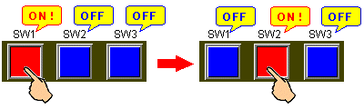
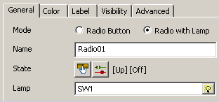
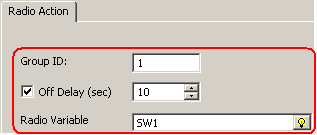
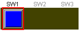
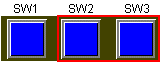
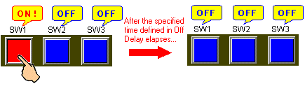

|
|
|
|
|
|
|
|
A radio button is a group of switches where only one of the switches can be ON at any time.


If variables assigned to radio buttons are turned ON by a method such as an equipment program or script other than the Touch operation, it will not operate as a radio button. Multiple switches may turn ON, as follows.

The example below describes how to create a radio button that operates as follows:
There are three switches, each of which turns ON/OFF the BOOL variables SW1, SW2, and SW3. See Chapter 6, Creating Variables.
For colors, Red indicates the switch is ON, and Blue indicates the switch is OFF.

From the Graphical Objects toolbar, click the Switch icon and select Radio.
Click and draw the area on the panel where you want the switch.
The Radio Settings dialog box opens.
In the General tab, select the Radio Button with Lamp for the mode.
Select the BOOL variable SW1 for the Lamp variable. The Lamp variable controls the radio switch's ON/OFF status.

Select the object's shape from the Style drop-down list.
In the Radio Action tab, set the Group ID to 1. Radio switches with the same Group ID act as a single radio switch. In the Radio Variable field, define the BOOL variable SW1.

In the Color tab, either:
Select a color resource from the Color Resource Library, or
Select Use Local Settings and then define the Color Settings for the Lamp variable's ON/OFF status. Set the ON Fore Color as Red and the OFF Fore Color as Blue.
Click OK to create a switch that turns ON/OFF as SW1 turns ON/OFF.

Repeat steps 1 to 8 to create similar switches that turn variables SW2 and SW3 ON/OFF. Make sure you set the Group ID to 1 because multiple switches with the same Group ID act as a single radio button.


If you select OFF Delay in the Radio Action tab, the radio button turns OFF when the specified time elapses. If, for instance, you turn SW2 ON before the OFF Delay time elapses for SW1, SW1 turns OFF regardless of the OFF Delay setting.
